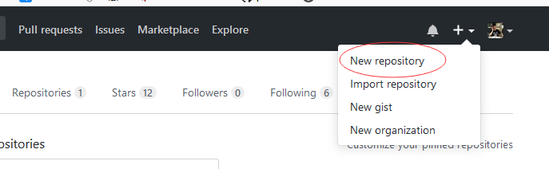
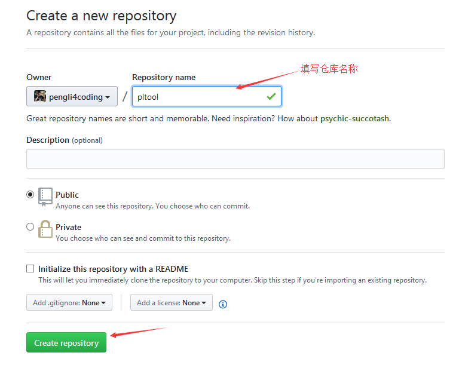
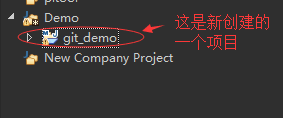
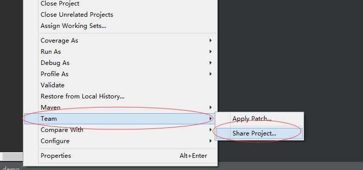
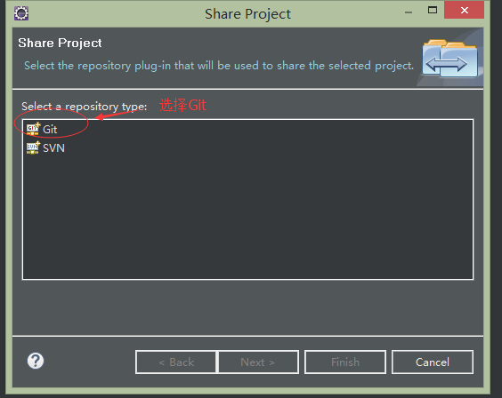
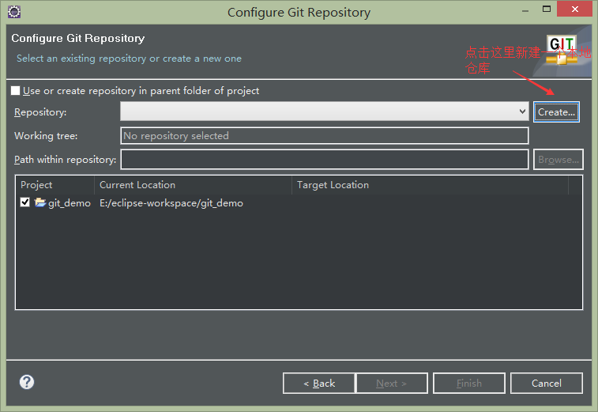
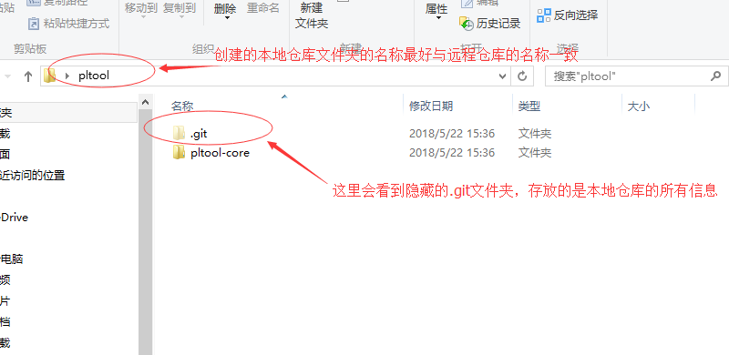
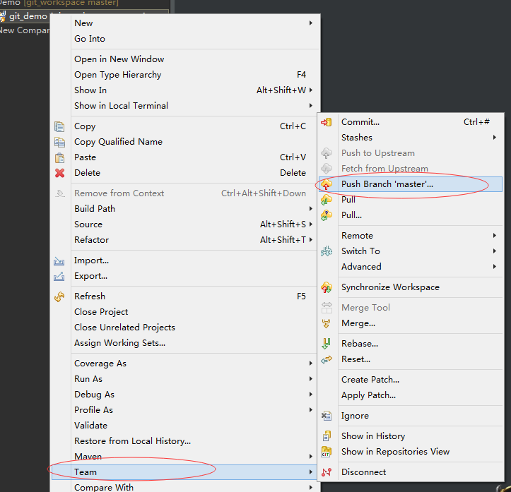
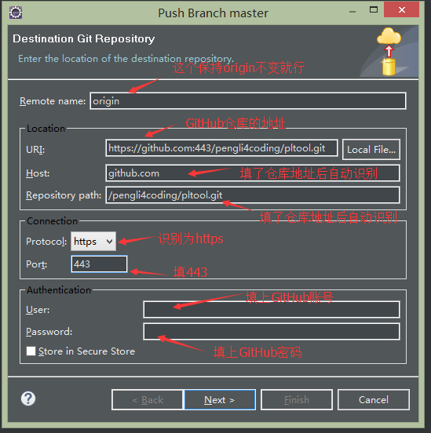

第一步：在GitHub上创建一个空项目
在GitHub页面上点击右上角加号旁边的倒三角->New repository

填写仓库名称点击创建仓库

第二步：在Eclipse上创建项目并提交到本地仓库
创建项目

分享项目并提交到本地仓库
在项目上点右键->Team->Share Project

选择Git

选择本地仓库的地址

特别注意一点的是：这里新建的本地仓库的文件名最好与远程仓库的名称一致
在刚才新建本地仓库的文件夹中就会看到.git隐藏文件夹了

在项目上点右键->Team->Commit提交项目到本地仓库
第三步：提交项目到远程仓库
在项目上点右键->Team->Push Branch 'master'提交项目到远程仓库

填上必要的信息

然后一路点next就可以了，如果过程中提升输入GitHub账号密码，那就输入呗！